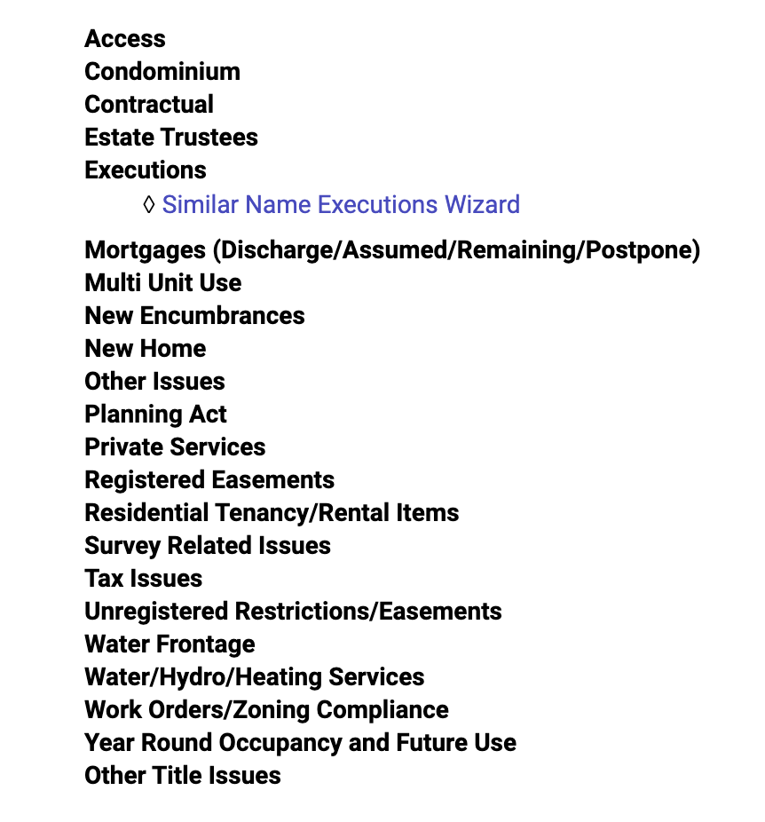
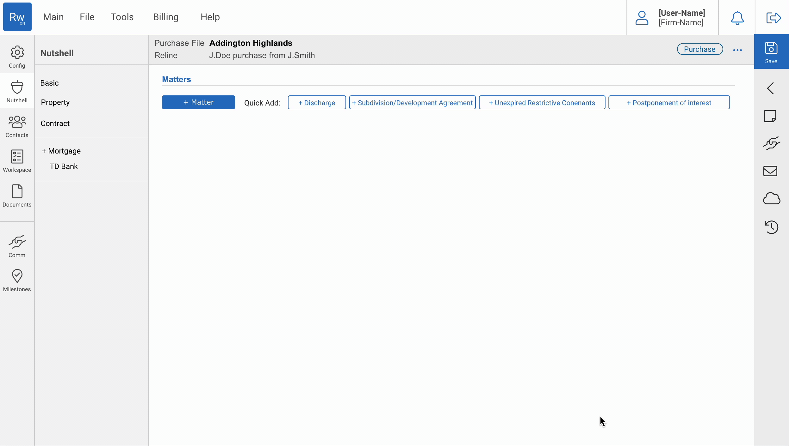
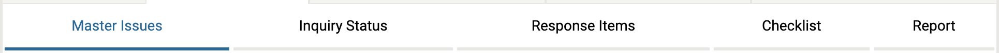
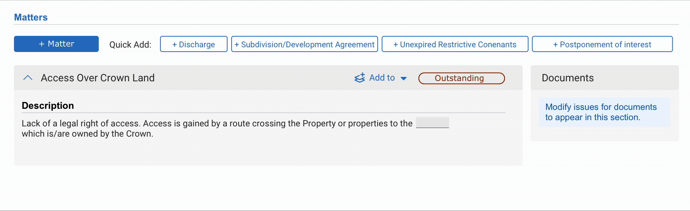

Problem
A system that was built by experienced lawyers but is used by less experienced legal clerks and other professionals.
Users
Ontario legal professionals. This applies to lawyers as well as others in the practice of real estate law such as paralegals, legal clerks and legal assistants.
Goal
Make filing technicalities in property transfers accessible to users who do not have the legal experience that the system was built initially expecting.
Result
A system that is universally accessible to legal professionals. The ‘Matters’ aspect of RealtiWeb was redesigned for ease of use for legal clerks, paralegals, and lawyers at any experience level.
Getting started
About the Platform
RealtiWeb is an application built by Canadian legal software company LDD. The web application's purpose is to assist in the closing of legal transactions across Canada. This includes final documents, property registration, and verifying the identity of buyers.
What are 'Matters'?
What RealtiWeb identifies as ‘Matters’ extends to any technicalities that may need to be identified and actioned upon for a property transfer or mortgage of a property to be completed. For example, if an existing mortgage needs to be discharged for a property transfer to complete, it would be considered an Matter and done with this functionality. Working with these Matters is a task that is typically fulfilled by lawyers, or their legal assistants, clerks, or paralegals.
Solution Outline
To bypass this arduous process, an app would be created that would simply scan a piece of ID and import it into the specific file in question.
Research
To begin understanding how to approach this project, I interviewed users. I ensured a split between lawyers and other legal professionals, as well as a split between experience level. I asked these users about what the typical process looks like for them, what confuses them, or where they find divides in communication between them and those in their firm, or what’s given to them on paper.

Persona Example
The Problems
The System
The most severe problem with the old ‘Matters’ function is that it assumes the user is an expert in the area. While this may be true for long-time lawyers, and those who created the first version of this platform, it fails to be accessible for newer legal professionals who only become overwhelmed by the process.
This Matter of understanding presented itself in several areas of the old system. The first is the initial add of the ‘Matter’. Formerly, Matters were categorised into folders with broad names. If the user did not have memorised where the specific Matter was, they would have to make a guess. Most users would not remember where the Matter was categorised as there are around 250 unique Matter options in the system. See how I solved this problem
Former list access
Another fatal problem with the existing functionality was that information was scattered across multiple pages instead of grouped together per each Matter added. Connected to this problem, it was unclear which actions are possible based on which Matters and the distinct statuses and formats of the Matter. See how I solved this problem
Project Management
Though LDD knew that the “Matters’ functionality was one of the system’s weaknesses despite having the potential to be a major strength, they had almost no insight into what the specific drawbacks were and how to improve them. My research defeated these problems and opened the path to a far more effective system.
Designing a New Solution
Adding an Matter
As previously identified, the first problem users faced when using the Matters functionality was that most do not know how the Matters are categorised. Each Matter had been sorted into a category with a broad name. These categories were slow to load, and gave little insight into what Matters they contained. Therefore, unless the user had an expert knowledge of all 250 (or so) Matters, they would likely have to search through multiple categories and subcategories, which can quickly become a long and frustrating process. I introduced two routes to combat this.
Route A) is a window that displays all Matters and has a search bar as a primary tool to allow users to quickly type in what they are looking for. Due to the amount of Matter options, displaying everything by default in this window would result in information overload. Because of this, I ran a program to scan through 20,000 user files and rank which Matters were most frequently used. The data from this suggested that the most effective route would be to show the top 50 Matters in the initial display, and provide a switch to the screen that would display everything if the user opted to. Although each Matter would now be displayed on screen rather than hidden in a category, I felt it was necessary to maintain the prior categorization so that long-time users could easily adapt to this process.
Route A
Route B) is on screen quick-add options. The same report of 20,000 files that I ran outlined that almost every file uses only the same four Matters. Because of this, it is not necessary to add the extra step of searching for the Matter among 250 options when instead the user in most cases should be able to quickly add the relevant Matter with one click.
Route B
Working with a Matter
When it comes to editing an Matter that a user had added, they were faced with a number of difficulties. For one, functions relating to Matters were scattered across multiple tabs.
Former tabs approach
Therefore, after editing one aspect of an Matter, users would often have to navigate to an entirely different section to edit another aspect. In this version of the system, the Matters functionality was not ordered by Matter, but instead by functionality. My research suggested that a far more efficient route for users would be to sort the Matters functionality to each Matter. This way, I was able to cut back on the number of pages from five to just one and localize the information in a far more logical manner.
Editing a matter
The new design offers a far more sensible approach for users where they can easily edit an Matter, and make actions upon it without any area for confusion.
Conclusion
This project was rich with complications and required a deep understanding of property transactions to complete effectively. I worked closely with the Lawyers inside of the organization to understand the technicalities that would be relevant to this project. I worked with a wide array of users to understand exactly what it is that made the previous system confusing and unusable and used qualitative and quantitative data to build a far more effective system for our users.
Let's Talk More
I would love to talk about this project a little more with you! Please send me an email and we can set up a chat to really go through what went into this project!